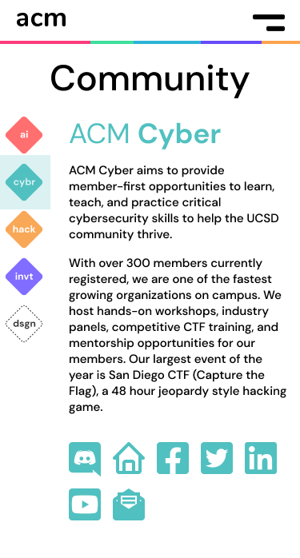
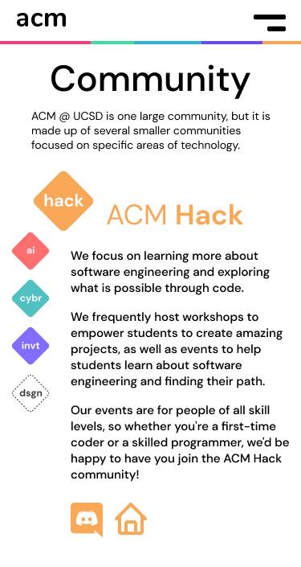
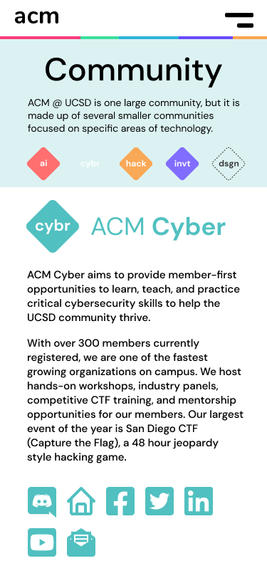
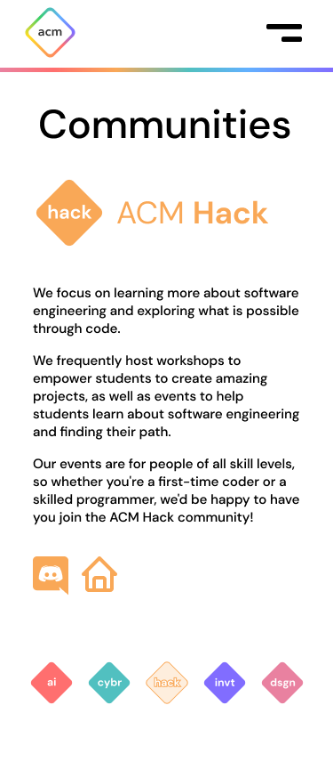

ACM@UCSD is a student community for developers and designers. In order to embrace a wider audience, more efficiently and comprehensively introduce ACM@UCSD, we decided to upgrade our website by enriching the content and improving the interactions.
Problem statement: The ACM website wants to shift from sponsor-oriented to member-focused. This calls for an upgrade to gather and offer sufficient information and enhance user experience.
▴ old workflow of the ACM website
▶ User interview and testing
What do college students look for on a student organization's website? To understand the need of potential members, we quickly dived into testing the old website. Our interviewees range from current ACM members to UCSD students who had never heard of ACM before.
During the interviews, there were some comments that we heard repeatedly:
In the old website, almost all introductions are too brief or general. Students new to the organization still can't imagine what ACM is by reading the provided information. Therefore, our first job would be to enrich the website content and ensure the information are specific and descriptive.
Many interviewees also complained about the unintuitive naming and flow of the buttons. For example, the "join us now" button at the beginning of the home page caused confusion, since the viewer wouldn't have read anything about why they should join by that point.
Among positive feedback, the aesthetic style of the old website was widely appreciated, so we decided to keep to it.
Besides, the official board of ACM asked us to rearrange the old sponsorship page and include benefits to sponsoring.
These come down to the new workflow:
▶ Only after a thousand entreaties does she appear
I want to tell you about three features that I am most proud of. Through many iterations did we came to these solutions that work the best.
Sub-community page
On the old website, sub-communities appeared merely as names. The users had to click them one by one to get further information. Even then, some of the links directly led to the sub-co's discords instead of any description page, which was very unacceptable according to our interviewees.
To collectively display introductions to sub-co, we added a "communities" tab to the website.
We first planned to put all sub-co information as an accordion list. The users would be able to read and compare the basic descriptions of all sub-co just by scrolling. While upon clicking, videos and images of each sub-co's events and projects would expand to show.
Then we heard that most sub-co wanted to customize their own website beyond our main one, since their focuses varied widely.
So we decided to only offer the most basic and important information in text on the communities page, with links to each sub-co's social medias and own website.
I took charge of contacting each sub-co to collect their principles, event types, and social medias for showcase.
Now that the paragraphs were up, we noticed the sub-co sections floating in the space of whiteness looked unsettled and indistinguishable. We tried giving each section a background color block, yet again they appeared thick and dirty.
I thought of shrinking the color block to only a bar on the side. The result turned out pleasing.
The lovely pastel bars added a cozy feeling to the sub-co sections. They successfully distinguished the sections from each other, while maintaining the minimalist style.
When converting to the mobile version, we met a problem: If all contents were still laid out on the same page it became an inefficient long scroll.
To avoid this, we decided to seperate the mobile communities page into multiple subpages, each of which containing one sub-co. We hoped that the users could read in any order and wouldn't have to go back and forth, so sub-co navigation buttons were made available on every subpage.
𝟙.
𝟚.
𝟛.

▴ iterations of the mobile communities page
We chose 𝟒 at last. Compared with 𝟙 and 𝟚, 𝟒 uses space more efficiently. Compared with 𝟛, 𝟒 better leads the users to read the the sub-co description.
𝟜.
Board member section
Filter: Dropdown vs. tabs vs. bubbles, chose the bubbles style. Color choice and toggle effect. More text here more text here more text here.
ACM had been seeking to introduce its board to website viewers for long. Our interviewees also agreed that the website would feel more humanized with names and faces shown.
Board member card: Shape and color. Better title arrangement. More text here more text here more text here.
Navigation bar
Desktop version: ordering and wording. More text here more text here more text here. More text here more text here more text here.
Phone version: visual effect. More text here more text here more text here. More text here more text here more text here.
-1.png)
▶ Communication with the development team
We have regular meetings every other week with the development team, who work on implementing our design. This is very helpful both in terms of getting valuable feedback and practicing the skill of communicating our design decisions.
Edge cases that we didn’t consider at first were brought up by the development team during actual implementation. For example, what to display when there is no event coming up in the near future, how to arrange very long board titles, how to handle the difference between big(long) and small(short) phone screens.
By communicating with the developers, we hear what is easy to do and what is hard, gradually getting a better sense of the cost-effect efficiency of implementation.
▶ Learning from the project
More text here more text here more text here. More text here more text here more text here. More text here more text here more text here.